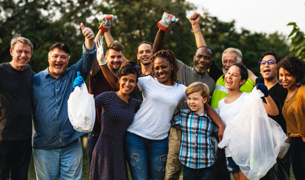

About Us
The Neighborhood Clean-Up Organizer is dedicated to bringing together community members to keep our environment clean and safe. Our mission is to organize and promote volunteer-driven clean-up events, raise awareness about environmental sustainability, and create a sense of unity among residents. By working together, we can ensure a healthier and greener neighborhood for everyone. Join us and be part of the change!
Join Us in Keeping Our Community Clean!
Sign up for an event and make a difference today.
Become a Volunteer
Our Community in Action
Soon Upcoming Events
Stay updated on our latest clean-up activities.
- Community Park Clean-Up - Join us on March 5th at 10:00 AM to help clean up the community park. Meet at the entrance!
- Beach Cleanup Drive - Help us clean the beach on March 12th at 9:00 AM. Bring your gloves and sunscreen!
- Neighborhood Trash Pickup - On March 19th, we will be cleaning the streets in the neighborhood starting at 11:00 AM. Let's make our streets cleaner!